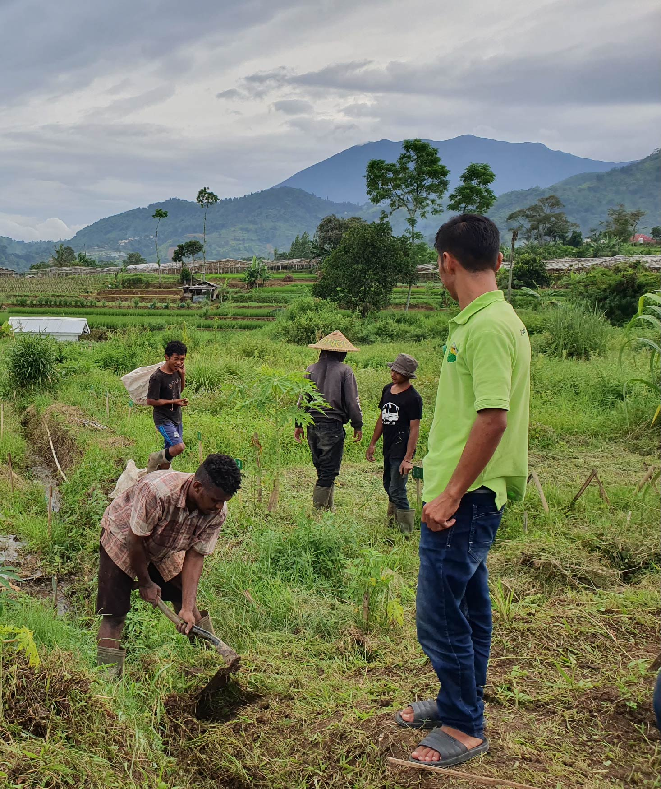

United Nations In Indonesia
Country Results Report 2021
Social Protection

The convergence of Indonesia’s persistently high informal labour rate, its geographically diffuse population, and the unequal socio-economic burdens imposed by COVID-19 heightened the risk of people falling through the country’s social safety net in 2021.
Universal health coverage is key to shoring up that net and the UN has supported the expansion of Indonesia’s national health insurance program since its rollout in 2014. By 2021 the insurance scheme covered some 86.96% of the population, up from 82.07% in 2020. Meanwhile, a UN collaboration with Gadjah Mada University produced a health situation dashboard, which incorporates data from the insurance scheme to inform evidence-based policymaking.
UN research is already guiding social protection health policies today. A 2021 evaluation of minimum service standards helped improve the consistency of primary healthcare, while an evaluation of catastrophic health spending will help reduce the risk of vulnerable Indonesians becoming impoverished due to medical expenses. For example, Indonesia’s first nationwide TB Patient Cost Survey showed that almost 40% of TB patients and their households suffer catastrophic costs, with the proportion rising to 80% for patients with drug-resistant TB—a situation that often leads to the loss of employment and housing. UN-led analysis and advocacy also helped the government mitigate COVID- 19’s disruptive impact on vulnerable households, including through a dynamic microsimulation of COVID-19’s impacts on child poverty, which guided the Government’s decision to invest in expanding social protection for vulnerable groups.
In 2021, the UN carried out several social protection projects under the COVID-19 Multi-Partner Trust Fund. This included assessing the efficacy of the targeting mechanism for cash assistance to vulnerable villages, and the piloting of a gender-responsive entrepreneurship program for women to generate income through producing essential goods and services to stem the spread of COVID-19.
The pandemic was far from the only disaster that threatened to leave people behind in 2021. Through 2021, the UN supported seven national-level ministries and five provincial governments in developing a framework of adaptive social protection to mitigate socioeconomic and climate shocks, including supporting vulnerable populations during disasters. The resulting Roadmap on Adaptive Social Protection will be completed in 2022, along with the Presidential Regulation for Social Protection reform. UN agencies also continued assisting the Ministry of Social Affairs’ enhancement of its digital disaster mitigation information system, called e-SIMBA. That assistance included integrating an UN-developed Platform for Real-time Impact and Situation Monitoring (PRISM) and building linkages with other early warning and risk information systems to enhance the Government system’s capacity to identify the most vulnerable populations affected by a disaster and prioritise assistance to those most in need.